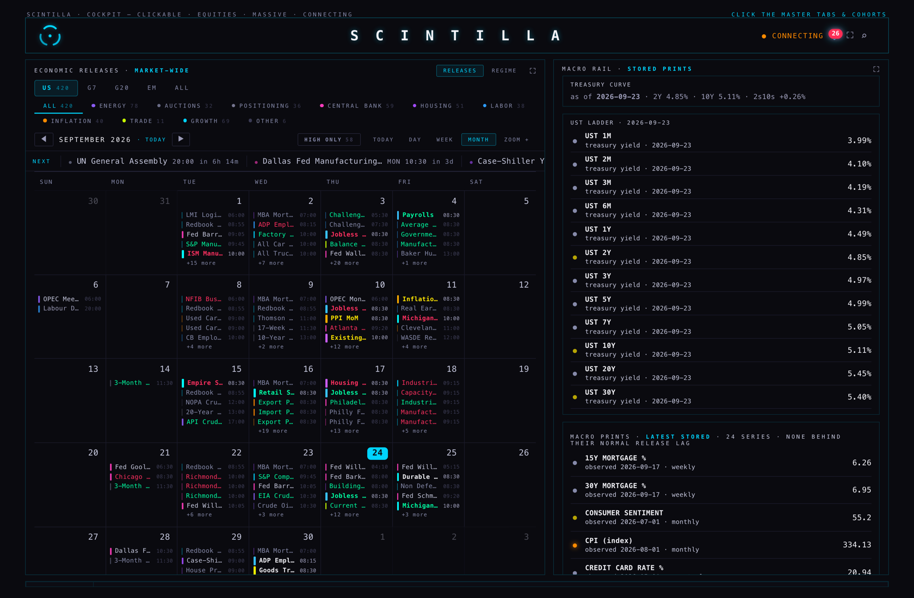
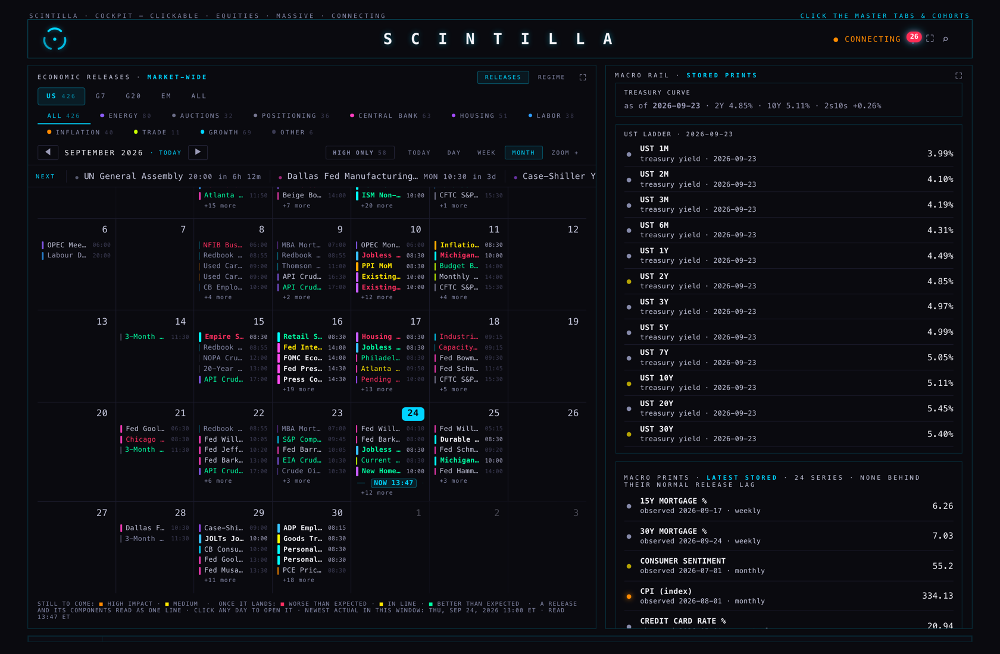
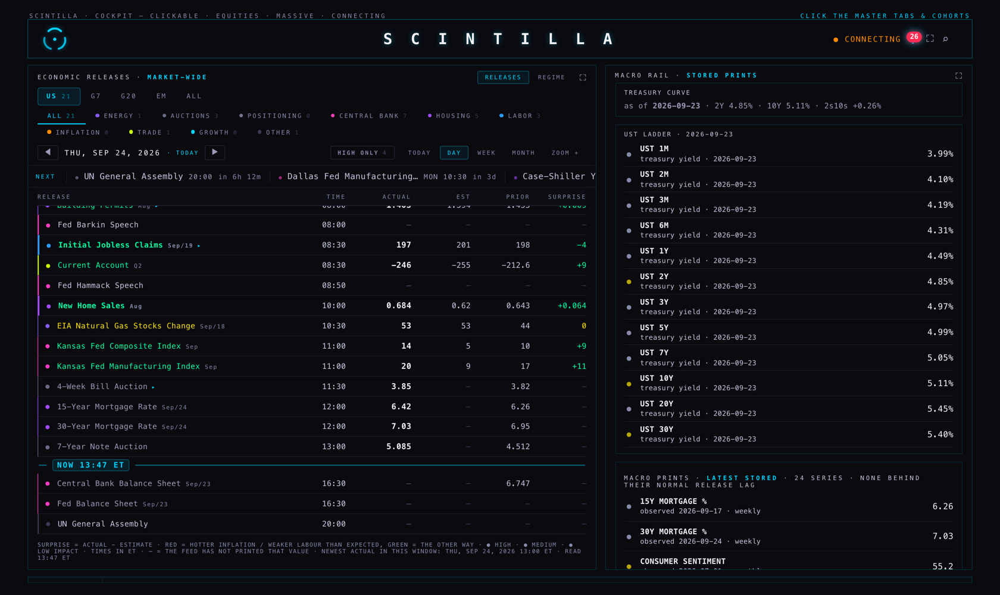
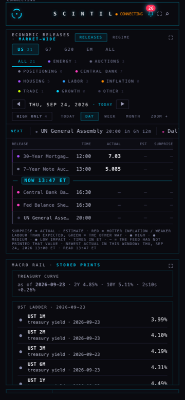
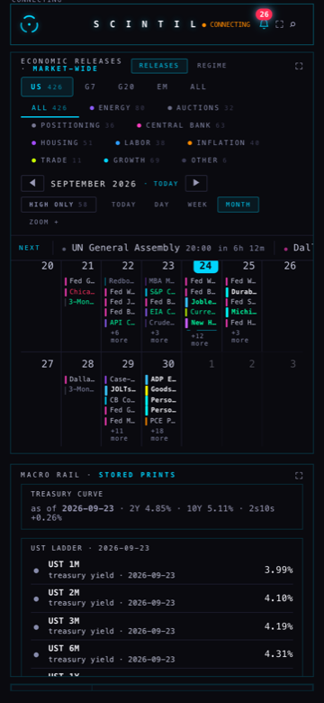
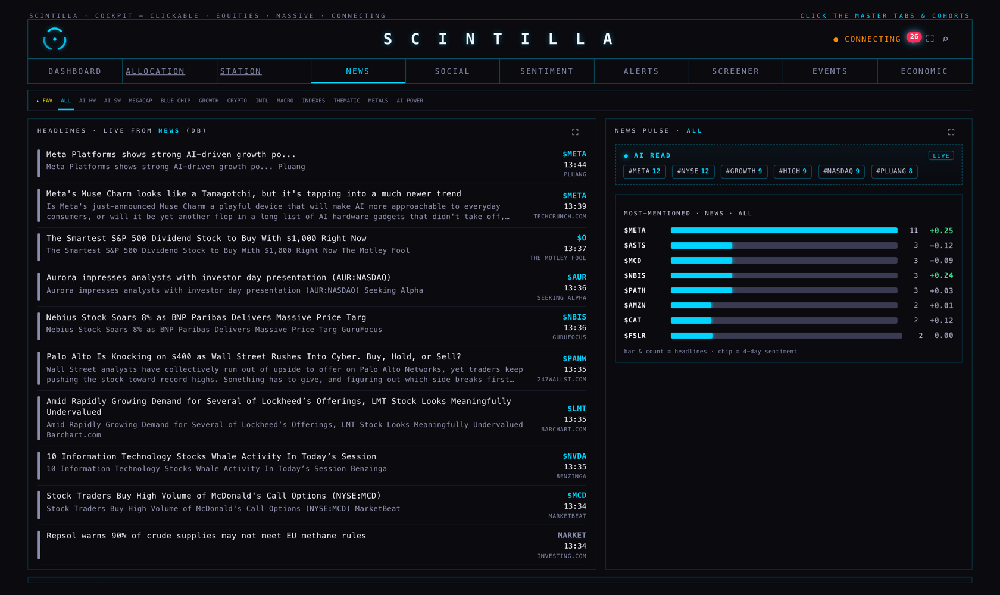

24 September 2026 · branch m70/econ-news-20260924 from the live Hub release 19d1870.
Nothing here is deployed. Nothing was pushed. The coordinator merges and deploys.
“did we have it in the economic calendar? … I scanned for it but I don’t remember seeing it … You know how the left to right slider tape of earnings, you put a line of the current date? Well, we need a horizontal one on the other side of the current hour … markings of current on all of those kinds of things that apply.” — Alan, 24 Sep, ~1 PM ET
It was there, and the calendar was hiding it. Your saved Economic view is MONTH. A month cell only has room for five entries, and the old rule kept the first five of the day by time and pushed the rest behind “+12 more”. New Home Sales is at 10:00 ET — tenth in the day — so it fell off the bottom, even though it is a High-impact release and the four Fed speeches above it are not.
Measured on the live release, before any change: today’s cell read “Fed Williams Speech 04:10 · Fed Barkin Speech 08:00 · Building Permits 08:00 · Jobless Claims 08:30 · Current Account 08:30 · +12 more”. New Home Sales was inside that +12.
The fix: a full cell now keeps the loudest releases of the day — high impact first, then earliest — and still draws the ones it keeps in time order. A High-impact print can no longer be the entry that falls off. “+12 more” still says how many are not shown, and its tooltip says they are the quieter ones.


Filters were not the cause: the release is graded High, its category is HOUSING, and the region is US, so HIGH ONLY, the category chips and the region tabs all keep it. In DAY view it was always visible.
Every list of releases in time order now carries one marker, drawn between the release that has already happened and the next one that has not, saying now HH:MM ET. It moves on its own: the room already wakes up once a minute to re-read, and the line re-places itself on that same tick — no second timer, no extra reading, nothing new fetched.
| Where | What it looks like |
|---|---|
| Economic calendar, DAY and WEEK | a full-width line with the label now 13:45 ET, between the rows either side of the current time |
| Economic calendar, MONTH | the same line inside today’s cell only, between the releases before and after now |
| The ECON tape (this week) | a marker between the releases that have printed and the ones still to come |
| The EARNINGS tape | a marker where today begins. Earnings are stored by day and by before-open / after-close, never by the clock, so its tooltip says exactly that — it is not a claim about the hour |
Where it is deliberately absent: on a day that is not today, and on the queue of what is coming next (everything in it is in the future, so a “now” marker there would sit at the edge and mean nothing).



This morning New Home Sales carried actual 684 and previous 607 — thousands of homes — with estimate 0.62, which is millions. Subtracting those gives a surprise of +683.38 for a release whose surprises are normally a few thousand. The Hub would have printed that, and the scintilla detector would have called an ordinary print the largest miss in the series’ history.
So this morning’s row would have read estimate 620 (shown with a dotted underline that explains itself on hover) and a surprise of +64.
Over the last 30 days of the live calendar (econ-units-scan.mjs, read-only):
| Rows read | With at least two values | Rescaled | Refused as ambiguous | Left exactly as supplied |
|---|---|---|---|---|
| 3,164 | 2,559 | 0 | 1 | 2,558 |
The one ambiguous row is AR Tax Revenue (Aug), 1 Sep: actual 20.51, previous 22,965, no estimate — a real thousands-versus-millions clash with no third value, so the rule leaves both numbers alone and says so.
Read this honestly: by the time I scanned, the New Home Sales row had been rewritten by the loader and now reads 0.684 / 0.62 / 0.643 — all millions, all consistent. So the defect is intermittent: it exists in the window between the first print and a later refresh. The rule is therefore a guard, not a mass correction — it costs nothing when nothing is wrong (proven: it changed 0 of 2,559 rows) and it catches the case you actually hit today.
They publish RSS and no API. Five of their feeds are news desks and are ingested; their Analysis & Opinion feeds are columns, not news, and are deliberately left out.
| Feed | Address | Read at 13:42 ET |
|---|---|---|
| All News | /rss/news.rss | 200 · 10 items |
| Economy | /rss/news_14.rss | 200 · 10 items |
| Stock Market | /rss/news_25.rss | 200 · 10 items |
| Economic Indicators | /rss/news_95.rss | 200 · 10 items |
| Commodities & Futures | /rss/news_11.rss | 200 · 10 items |
What is stored: the headline, its time and its link. Nothing else — no article text, and the page behind the link
is never fetched. Each row is filed as site = Investing.com under the Hub’s existing market-wide bucket
_MARKET, which the page already routes to the NEWS room’s ALL tab (“the only tab that shows
ticker=_MARKET”). No page change was needed to make them appear.
| Offered by the five feeds | Dropped: same story twice | Dropped: time in the future | Already in the table | Would be stored |
|---|---|---|---|---|
| 50 | 6 | 0 | 0 | 44 |
Newest headline 14 minutes old, oldest 337 minutes. The de-duplication is on the link and on a flattened headline, so the same story riding three of their feeds is stored once. Nothing was written: the dry run only reads.

Short answer: possible, but not trivial, and I would not build it yet.
scintilla/investing) → a small scheduled function reads that label through the Gmail API → it stores the
subject, time and link in a table beside the news.| Number | Source |
|---|---|
| The releases, their times, actual / estimate / previous | public.econ_calendar, written by the fmp-economic loader from FMP. Times shown in ET. |
| “+12 more”, the five entries, the cell contents | read from the live table through the page itself, in a real browser, at 13:45–13:47 ET on 24 Sep. |
| 3,164 / 2,559 / 0 / 1 | econ-units-scan.mjs — one read-only query over the last 30 days, with the rule imported from the detector that would run in production. |
| 50 / 6 / 0 / 44 | investing-dryrun.mjs — the five live feeds, parsed by the candidate function’s own code. |
| 0.14 s versus a 3 s timeout | two timed reads of public.news against the live database, one by ticker+url, one by url alone. |
migrations/20260924_news_url_index.sql, because a lookup by link alone currently times out.news-feed (v21, sha256 3a3ac01b…,
taken 19 Sep). If the live function has changed since, the block still applies but the line numbers will not.econ_calendar_drop_moved() (cron 269) was not touched, undone or worked around.fmp-economic loader was not changed — it is not in git and I could not read it. What it should do is
written down in fmp-economic-PROPOSAL.md instead.prototypes/indicator-lab/ is byte-identical. The other rooms are untouched.Files in this folder: ECON-NEWS.html news-feed-v23-investing-CANDIDATE.ts investing-dryrun.mjs econ-units-scan.mjs fmp-economic-PROPOSAL.md migrations/20260924_econ_calendar_unified.sql migrations/20260924_news_url_index.sql shots/